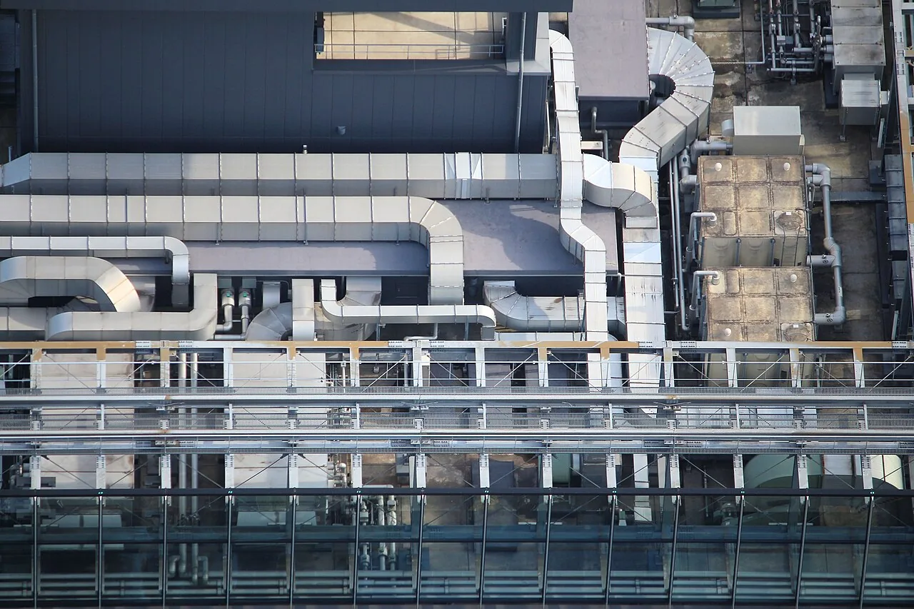

Shitsugaiki: the air-conditioner unit as an object of attention
In December 2018, one of Japan's most-watched prime-time programmes devoted a segment to air-conditioner outdoor units. Not to buying one, or servicing one — to looking at them. Two enthusiasts appeared, the show sorted the hobby into three recognised types, and a nation watched a discussion of condenser aesthetics. The Japanese word is 室外機 (shitsugaiki), literally "outdoor machine," and there is a reason the hobby could only really have formed here: Japan has an extraordinary density of these boxes bolted to the outside of its buildings, at eye level, on almost every street.

Why Japan has so many to look at
The hobby rests on a supply of subject matter, and the supply is enormous. Figures derived from the Cabinet Office's consumer trends survey put room air-conditioner ownership at 92.5% of households of two or more people, with owning households holding an average of 3.11 units. Ownership passed 80% in the mid-1990s and has sat around 90% since the 2000s.
The second factor is the architecture of the machine. Japanese domestic air conditioning is overwhelmingly the split system: a slim indoor unit on the wall, connected by refrigerant piping to a separate outdoor unit that carries the compressor and condenser. The window-box units common in some countries are the exception here. That means every one of those three-per-household machines has a metal box on the outside of the building — on a balcony, bolted to a wall, standing in an alley, stacked on a rack.
Put those two facts together in a country of narrow streets and dense low-rise housing and you get the actual visual condition of urban Japan: outdoor units at eye level, in rows, in stacks, wedged into gaps, with their piping wrapped and routed across facades. It is one of the most consistent features of the built environment and one that visitors photograph constantly without ever quite noticing.
The night it was on prime-time television
The hobby's mainstream moment came on 4 December 2018, when TBS's Matsuko no Shiranai Sekai — "The World Matsuko Doesn't Know," a long-running programme in which specialists introduce the host to their obsession — ran a segment on the world of the outdoor unit. Two enthusiasts appeared, and the broadcast went into the machines themselves as well as the aesthetics, covering Daikin's humidifying system that draws moisture from outside air and Mitsubishi Electric's cold-climate models.
One of the two guests is Endcape (エンドケイプ), a lyricist and creator working under a pen name, born 19 October 1973 in Tokyo. His day job is writing song lyrics — among them the opening theme of JoJo's Bizarre Adventure: Diamond Is Unbreakable. He has been publishing photographs of outdoor units online for years and has written a column called "Endcape's Outdoor Unit Mania" for the live-music site Rooftop since 2010, as well as hosting talk events on the subject. The second guest, Mao (真魚), an illustrator, was presented as the mechanically-minded counterpart — described as someone who brings a chair to sit on while contemplating a favourite unit, and who photographs from below looking up.
The broadcast date of 4 December 2018 is consistent across multiple Japanese programme-listing sites, but we were not able to confirm it on TBS's own archive. Endcape's biography is documented; Mao's public profile is thin, and there is a separate well-known actress with the same name, so do not conflate them.
The three types of enthusiast
The most useful thing the programme did was give the hobby a taxonomy. Three types were set out.
| Type | What they're drawn to |
|---|---|
| Form appreciatorフォルム好き・鑑賞型 | The shape of the box itself — proportions, grille patterns, the way a unit sits in its setting. Endcape's category |
| Mechanism enthusiast機能好き・機械型 | What the machine does and how — compressor behaviour, manufacturer-specific engineering, model differences. Mao's category |
| Pipework appreciator配管好き・鑑賞型 | Not the unit but the refrigerant piping — how it is routed, wrapped, bent and bracketed across a building's face |
That third category is the one that gives the game away. A person who looks past the machine entirely and appreciates the tape-wrapped pipe running down a wall is not being ironic — they are reading an installer's decisions. Every route is a series of choices about the shortest path, the least damage to the facade, and what the neighbour will tolerate.
What there is to see
Once the category exists in your head, the street changes. Some of what enthusiasts point to:
- Stacking and racking — where ground space is unavailable, units go onto wall brackets or steel frames, sometimes four or five high, each with its own pipe run.
- Grille and fan-cowl design — the pattern over the fan is one of the few places a manufacturer expresses a house style on an object nobody is supposed to look at.
- Piping runs — the wrapped line-sets, the bends, the drip of condensate, the point where a run disappears through a wall.
- Placement compromises — units in alleys, on roofs, under stairs, in the gap between two buildings, or in a decorative cover meant to hide them.
- Age — a rusted unit from the 1990s next to a new one, with the differences in size and louvre design visible side by side.
There is a serious point buried in this. Domestic outdoor units are the most numerous piece of industrial design most people in Japan live alongside, and almost the only one designed on the explicit assumption that nobody will look at it. The hobby is what happens when somebody does.
Trying it yourself
This requires no travel planning and no admission fee, which makes it unusual among the things we write about. With ownership above nine in ten households and roughly three units each, any residential back street in any Japanese city will do. Look for the older low-rise neighbourhoods rather than new developments — the units are more varied in age, closer to eye level, and the pipe runs are improvised rather than designed in.
Outdoor units are attached to people's homes. Photographing a wall of them from a public street is unremarkable; standing in someone's parking space or leaning over a private boundary to get the shot is not. The same restraint that applies to photographing residential streets anywhere applies here.
Some links above are affiliate links. We may earn a commission at no extra cost to you. We only list services we'd use ourselves.
The Japanese you'll actually use
| Japanese | Reading | Meaning |
|---|---|---|
| 室外機 | shitsugaiki | outdoor unit — literally "outside machine" |
| 室内機 | shitsunaiki | indoor unit — the wall-mounted half |
| エアコン | eakon | air conditioner |
| 配管 | haikan | piping — the third enthusiast type's subject |
| ベランダ | beranda | balcony — where a great many units live |
| 鑑賞 | kanshō | appreciation / contemplative viewing |
| マニア | mania | enthusiast — the noun for a person, not the condition |
| 普及率 | fukyūritsu | penetration rate — as in the 92.5% figure |
Want these to stick? The free JLPT battle quiz drills everyday vocabulary like this with spaced repetition.
Japan's infrastructure-appreciation habit runs wide: power line lovers →, a museum of fire-hose inlets in Shimbashi →, manhole cards → and the wider world of free public collectible cards →.
Common questions
Q. What is shitsugaiki (室外機)?
A. The outdoor unit of a split-system air conditioner — the box containing the compressor and condenser, mounted outside the building and connected to the indoor unit by refrigerant piping. In Japan it is also the subject of a small appreciation hobby.
Q. Do people in Japan really collect or photograph air-conditioner units?
A. Yes. TBS's Matsuko no Shiranai Sekai devoted a segment to it on 4 December 2018 with two enthusiast guests, and one of them, the lyricist Endcape, has written a regular column on the subject for the site Rooftop since 2010.
Q. Why does Japan have so many outdoor units?
A. Room air conditioners are owned by 92.5% of households of two or more people, at an average of 3.11 units per owning household, and Japanese domestic air conditioning is almost entirely split-system — so each machine puts a separate box on the outside of the building.
Q. What are the three types of enthusiast?
A. As set out on the broadcast: the form appreciator, drawn to the shape of the unit; the mechanism enthusiast, interested in how the machine works and how manufacturers differ; and the pipework appreciator, who looks at the refrigerant piping rather than the unit itself.
Q. Where can a visitor see this?
A. Anywhere. Older low-rise residential streets are the most rewarding, because the units vary in age, sit close to eye level, and have improvised rather than designed-in pipe runs. Photograph from public streets and stay off private property.
Q. Is this related to Japan's power line hobby?
A. They are separate hobbies with a shared instinct — treating ordinary building services as something worth looking at closely. The same reflex produces Japan's transmission tower fans, water tower photographers and the Shimbashi museum devoted to fire-hose inlets.